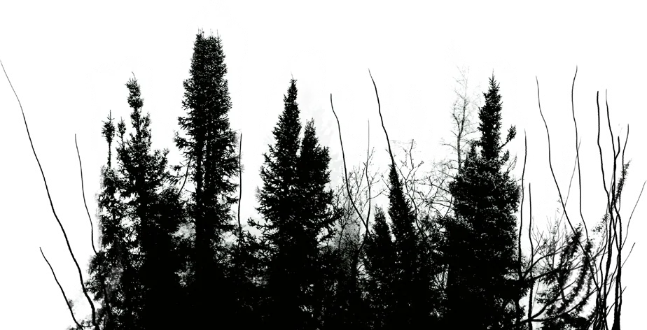

Galgenbeck S. 9
Galgenbeck im Land Tveland ist die größte Stadt, die es je gab. Kein König und keine Königin herrscht in Galgenbeck, sondern eine Erzpriesterin: Josilfa Migol. Tief unter der Kathedrale der Zweiköpfigen Basilisken, in einer kühlen schwarzen Kammer, die von Lichtsplittern durchkreuzt wird, steht ihr Thron. Josilfa, alt, aber noch immer jung, munkelt das gemeine Volk, stehe im Bund mit dem Gott Nechrubel, der ihr ewiges Leben schenkte. Nechrubel: der Schatten, der alles bedeckt. Nechrubel ist Schwermut, Missernte, Zwietracht und Krieg. Man sagt, sie habe Verhu die apokalyptischen Prophezeiungen ins Ohr geflüstert.
Je knapper die Zeit wird, desto verzweifelter werben die Zweiköpfigen Basilisken um Anhänger. Sich das eigene Leben zu nehmen, gilt als sündige Feigheit. Der Weg zur Erlösung führt über die Abtötung des Fleisches: Der Apokalypse ist mit Peitschenhieben und weit offenen Augen zu begegnen. Nur dann darf die Seele in die Schimmernden Gefilde übergehen. Ketzer und Abtrünnige werden gejagt und von der Inquisition gebessert – öffentlich und ausgiebig.
Sarkash S. 9

Der Wald scheint in letzter Zeit unnatürlich schnell zu wachsen. Pfade verheddern sich, und Wind im überwucherten Dunkel führt Wanderer in die Irre. Tief in Sarkash, wo man es am wenigsten erwartet, in einem Kranz sterbender Bäume, liegt Graven-Tosk: ein wahrhaft uralter Friedhof voller Mausoleen, blickloser Cherubim, stehender Brunnen, Pestgruben und gewöhnlicher Gräber.